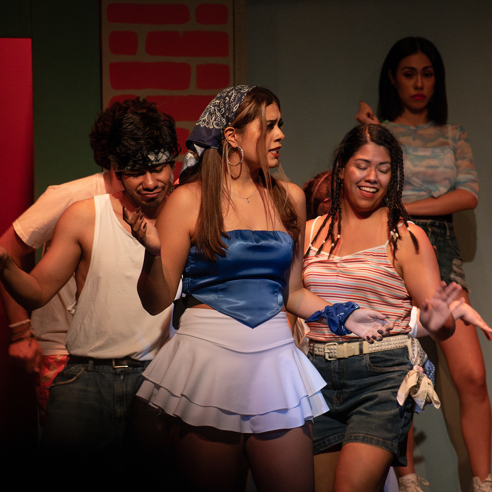
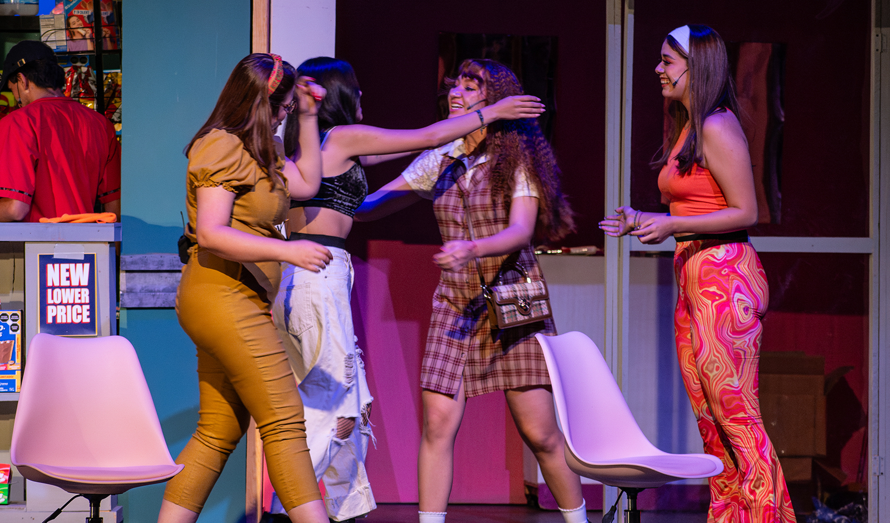
 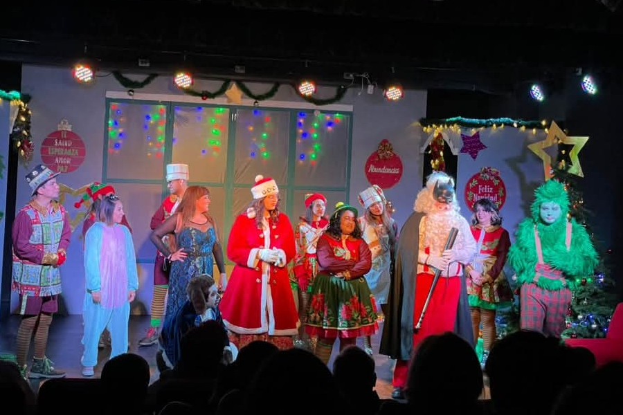
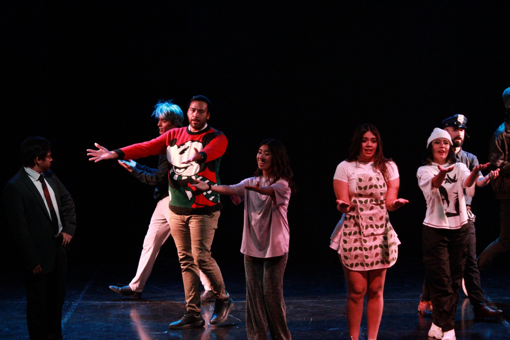
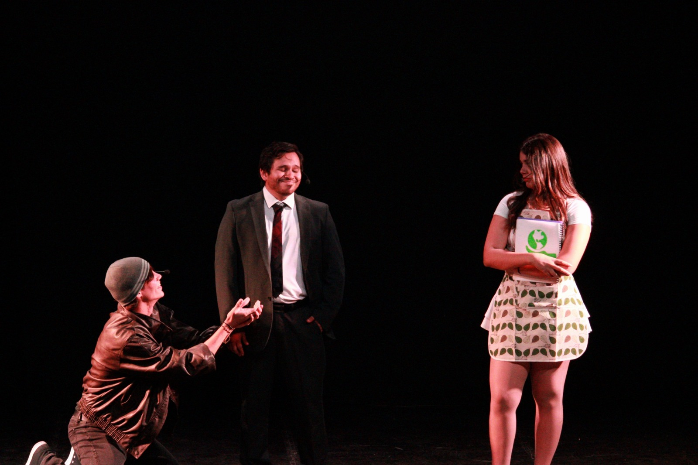
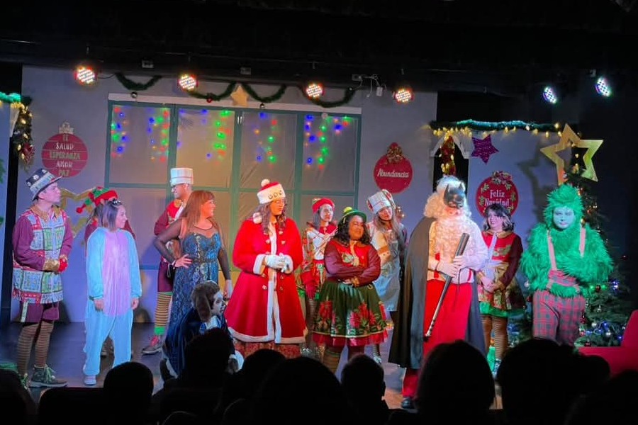
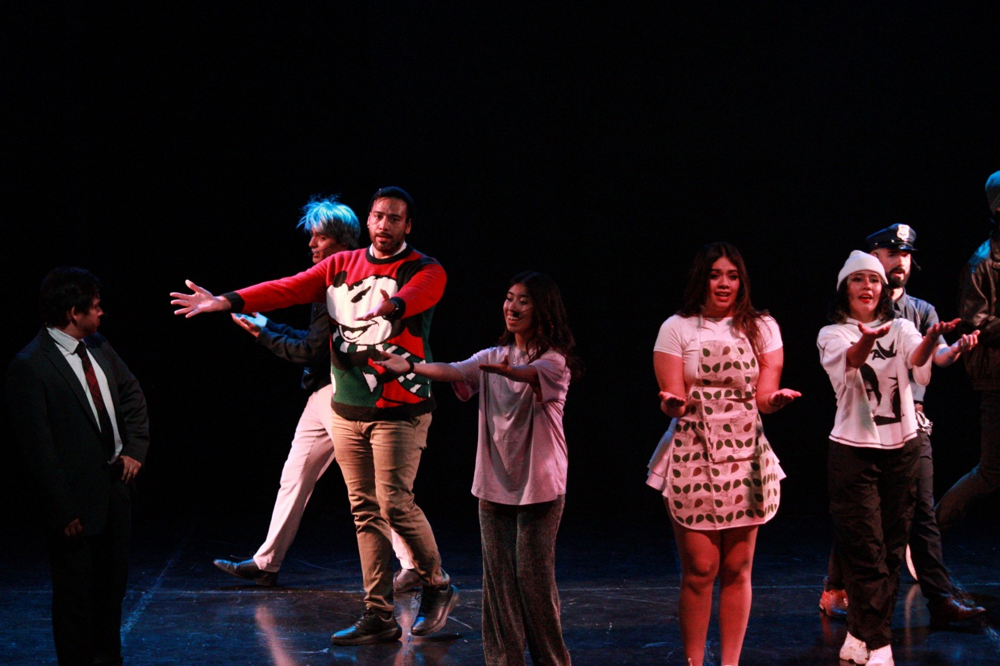
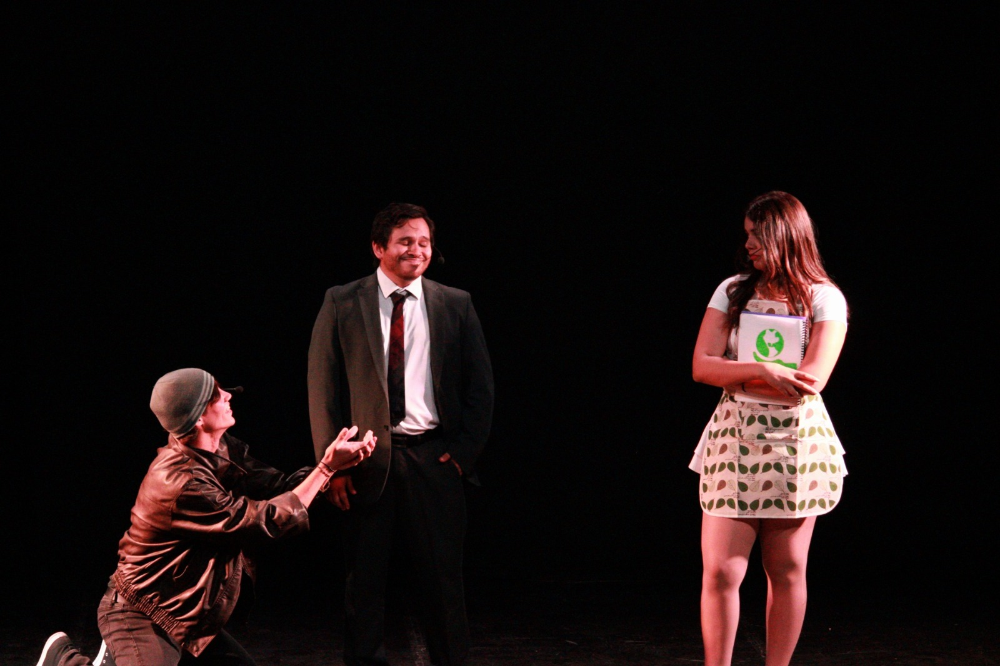
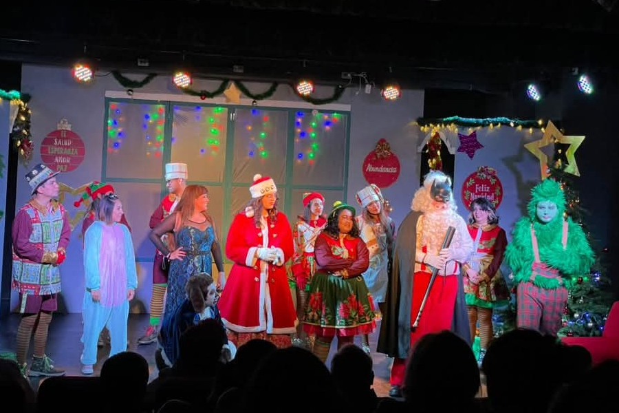
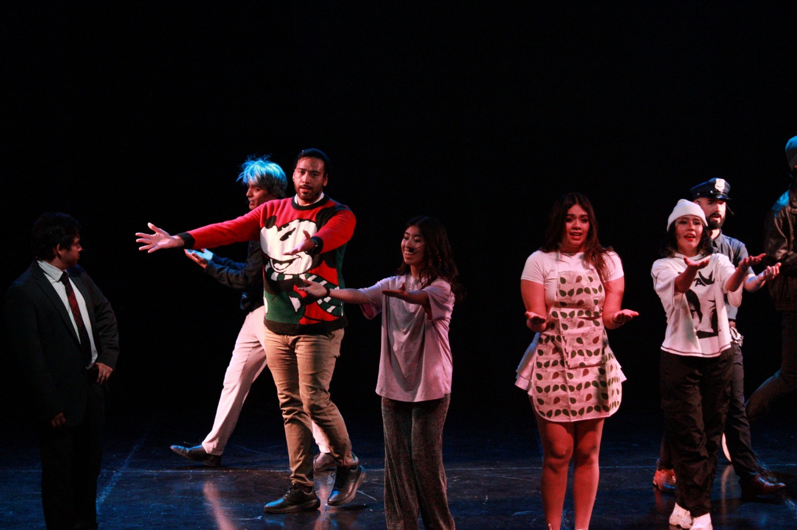
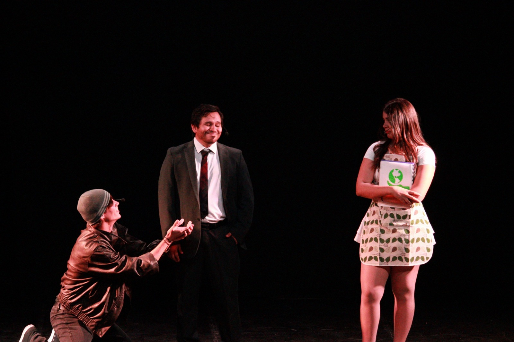
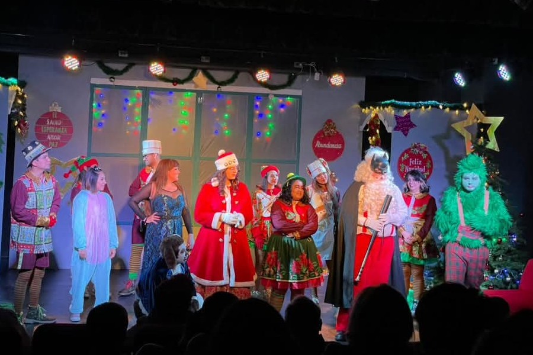
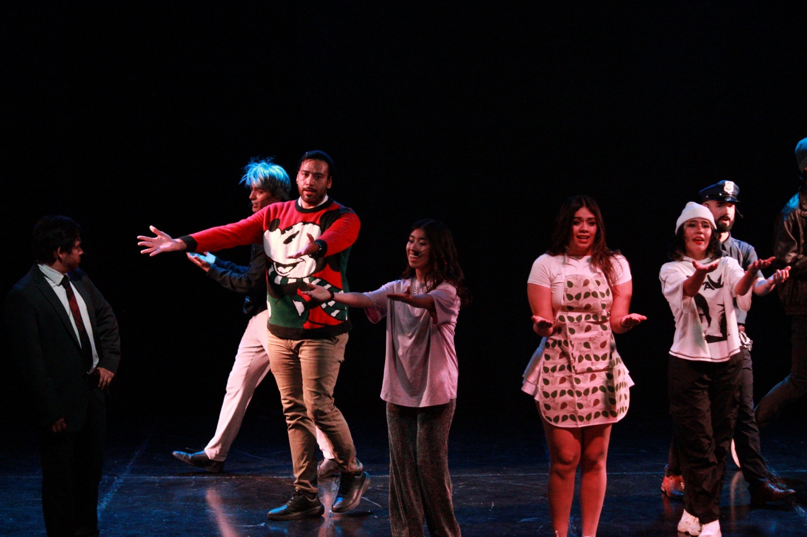
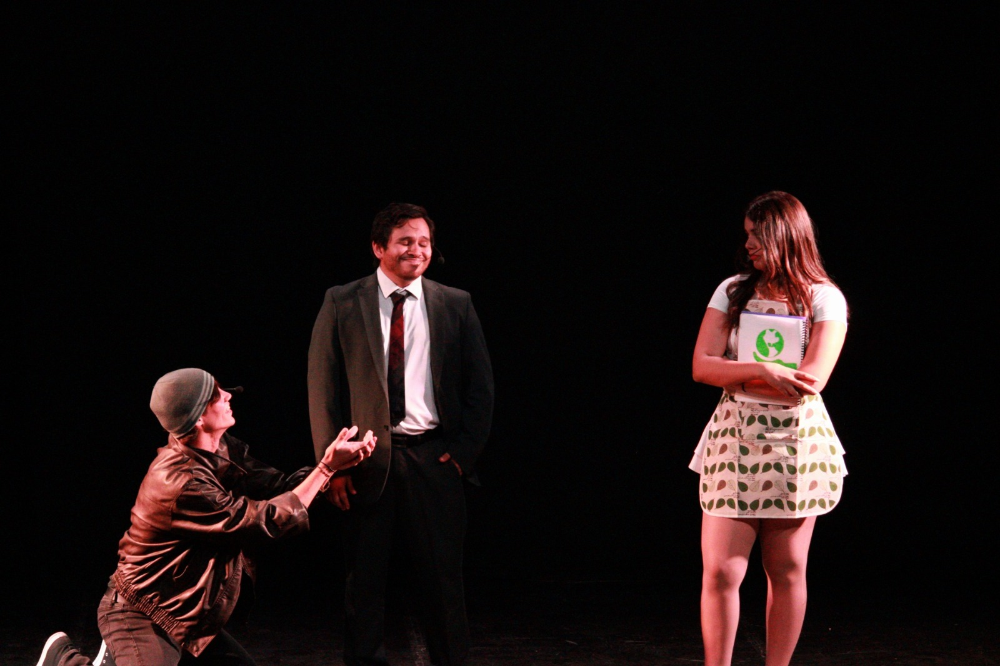
Mariana Alejandra Guardado Gudiño —pero puedes decirme Mar—. He vivido siempre entre la música y el baile hasta convertirlos en mi camino profesional. Del salón de ensayo al escenario, del storyboard a la luz en el telón.
Era una niña aún cuando comencé a subir a escenarios en presentaciones y competencias. Cada paso me dejó algo—disciplina, juego y respeto por el público—y si me ves en el escenario, probablemente entiendas por qué sigo ahí.
En 2020 entré a una academia de teatro musical. Desde entonces participé en Rescatando la Navidad (Sra. Claus) y llegué a un protagónico en In the Heights (Carla). En mayo de 2025 fui parte del elenco principal de El hombre al que no le gustaban los musicales; actualmente interpreto a Heather Duke en Heathers: El Musical.
Mis mejores momentos en escena.
Para colaboraciones, prensa y castings.